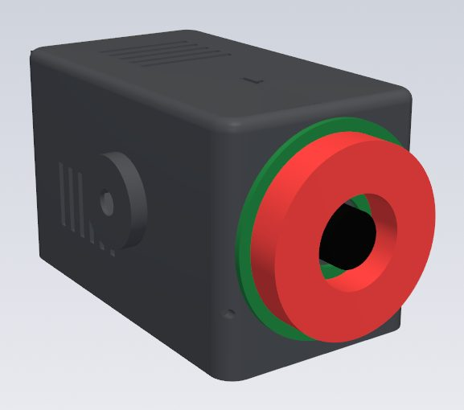
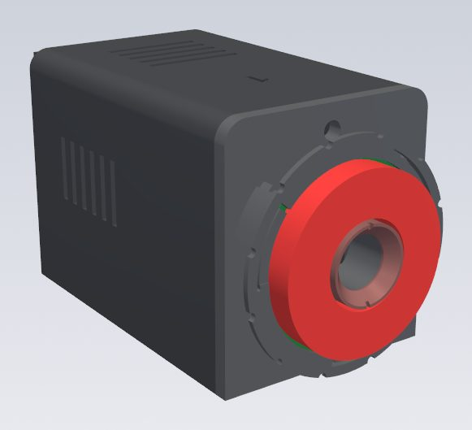
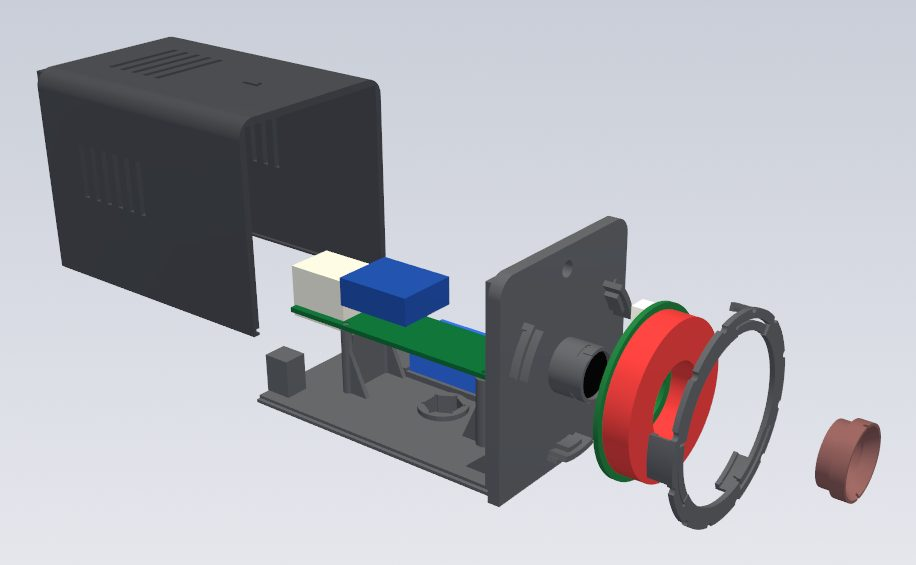

CAMERA · DEVELOPMENT STATUS
自作カメラ。
反射マーカーを撮るための、MOCAPTYXのカメラです。
いまは市販の部品を組み合わせ、3Dプリントのケースに入れて、実際のスタジオで使っています。

作り方・ケースのデータ（STL / STEP）・リンク付きの部品表・カメラのファームは、PCアプリと同時に公開する予定です。カメラだけを先に組んでも、まだMOCAPTYXでは動かせません。このページでは、いまの姿と開発の様子を紹介します。
01どんなカメラ？
部屋の四隅に立てた支柱にカメラを付け、体に付けた反射マーカーを、いろいろな方向から撮ります。カメラはマーカーの光の点だけを画像の中から見つけて、その位置をLANでPCへ送ります。
| 部分 | いま使っているもの（市販品） |
|---|---|
| ボード | ESP32-P4-ETH（Waveshare、または互換品）。カメラの画像からマーカーを見つけ、LANで送ります |
| 電源・通信 | PoE。LANケーブル1本で電源と通信。LEDリングの12 Vは、PoEスプリッタから取っています |
| センサー | OV9281（白黒・グローバルシャッター・1MP）のカメラモジュール |
| レンズ | M12マウントの広角レンズ（赤外線カットなし）。赤外線だけを通すフィルムを重ねます |
| 照明 | 850 nmの赤外線LEDリング（36個・12 V）。レンズのすぐ横から照らすと、反射マーカーが明るく光ります |
| ケース | 3Dプリント（黒い耐熱レジン）。自由雲台用の1/4インチのネジ穴付き |
全部のカメラはLANを通して時刻を合わせ、同じ瞬間に撮ります。標準は8台（4本の支柱に上下2台ずつ）です。
02費用の目安
| 目安 | 含まれるもの | |
|---|---|---|
| 8台一式 | 約20万円 | カメラ8台（ボードとPoEモジュール、カメラモジュール、レンズ、LEDリング、PoEスプリッタ、ケースの印刷、フィルム・ネジなど、LANケーブル）、PoEスイッチ（PoE 8ポート）、取り付け金具（突っ張り式の支柱4本、クランプ8個、小さな自由雲台8個） |
作者が2026年9〜10月に実際にそろえたときのおおよその金額です。PC、反射マーカー、送料は含みません。値段や在庫は変わります。正確な部品表は、作り方と一緒に公開します。
03ケース v1 と v3


v1：組み立てて、スタジオで使っています
8台ぶんをネット注文の3Dプリント（JLC3DP、黒い耐熱レジン）で作り、実際に使っています。家庭用の3Dプリンター（FDM）では、うまく作れませんでした。使ってみて、次のことが分かりました。
- LEDリングの裏のコネクタがケースの前面に当たり、リングがぴったり付かない。
- LEDリングの線が短く、ケースの後ろまで届きにくい。
- ケースを閉じた後だと、中のカメラのネジにドライバーが届かない。
- クランプを強く締めると、1/4インチのナットが抜けることがある。
- 下向きのピンが付いたボードだと、ピンがケースの底に当たる。
- LEDリングは前面に載せて線をテープで留めているだけなので、ぶつけるとずれることがある。
- 雲台のネジ1本だけで留めるので、ケースがネジのまわりで回りやすい。
v3：部品とネジを減らした次の版

- 印刷する部品は4つ、ネジは4本（v1 は印刷部品2つとネジ12本。任意の部品を使うと、さらに2つと3本）。
- カメラ・ボード・ナットを、机の上で前面の部品にまとめて付けられます。ネジは真っすぐ届く位置にあります。
- LEDリングは3点で支え、回して留めるリング押さえ（ばね付き）で押さえます。ネジは不要で、リングの裏に空気が通ります。
- 赤外線フィルムは、回して留めるキャップに入れます。キャップを外せば、分解せずにピントを合わせ直せます。
- 底面の放射状の溝が雲台のゴムに食い込み、ケースが回りにくくなります。ナットは引き込んで固定し、抜けにくくしました。
- ボードを高く載せ、下向きのピンが付いたボードでも入ります。LEDを点滅させる部品（将来のストロボ用）の置き場所もあります。
v3 は設計を終えた段階です。作り方の公開時に、実物で確かめた結果とあわせて案内します。
LEDリングは点けたままだと3〜4 Wの熱を出し、樹脂のケースが温まります。熱でケースがゆがむとカメラの向きが変わるため、リングの裏に空気を通す、撮影の瞬間だけ光らせる（ストロボ）といった工夫を進めています。
04専用基板（開発中）
市販の部品の組み合わせとは別に、カメラ用の専用基板を開発中です。部品の数と配線を減らし、もっと小さく、組み立てやすくすることを目指しています。公開の時期や内容は、まだ決まっていません。
05これから公開するもの
次のものを、PCアプリの公開と同時にまとめて公開する予定です。
- 作り方（部品の準備、ケースの印刷、組み立て、ピント合わせ、赤外線フィルム、LEDの電源、支柱への取り付けと向き）
- ケースのデータ：v1 と v3 の STL / STEP と、ケースを作るスクリプト
- 部品表：購入先のリンクと参考価格つき
- カメラのファーム（PCアプリと一緒に）
自分用のカメラを作ることも、カメラ・ケース・キットとして作って販売することも、無償でできる方針です（現時点）。製品ページとパッケージに「MOCAPTYX対応」と表示すること、製品名・ブランド・ロゴに「MOCAPTYX」を使わないこと、販売前にご連絡いただくこと、安全性・法令への対応・サポートは販売する方が担うことが条件です（利用方針、ご相談）。ファームウェアも同じく無償で、書き込んだ状態で販売できます。
ご質問や「こういう情報がほしい」というご要望は、Issuesへどうぞ。